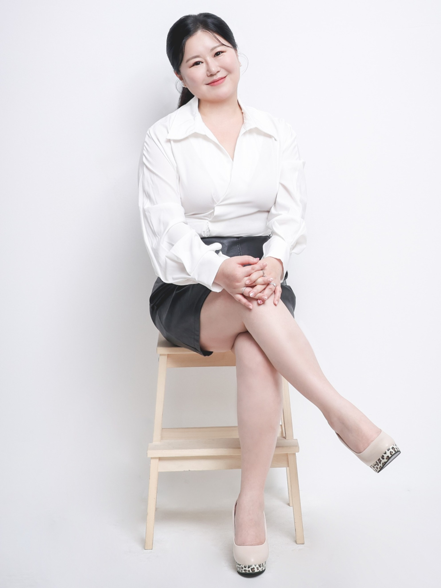

MEET THE LECTURER

김소현
맘길교육심리연구소 대표
교육과 심리를 바탕으로 아이와 부모, 교사가 서로를 더 잘 이해할 수 있도록 돕습니다. 청소년과 부모를 잇는 통합교육, 학교폭력 예방교육, 부모교육과 상담을 중심으로 강의와 워크숍을 진행합니다.
교육전북대학교 교육대학원 교육학석사 · 청소년학·심리학 학사주요 활동전북특별자치도교육청 부모교육·인성/민주시민교육 인증강사
전북특별자치도교육청 학교폭력전담조사관
K-전문강사협회 이사 · 차오름교육연구소 교육팀장자격청소년지도사 2급 · 청소년상담사 2급 · 임상심리사 2급
부모상담전문가 1급 · 아동심리상담사 1급 · CS 전문강사
전북특별자치도교육청 학교폭력전담조사관
K-전문강사협회 이사 · 차오름교육연구소 교육팀장자격청소년지도사 2급 · 청소년상담사 2급 · 임상심리사 2급
부모상담전문가 1급 · 아동심리상담사 1급 · CS 전문강사